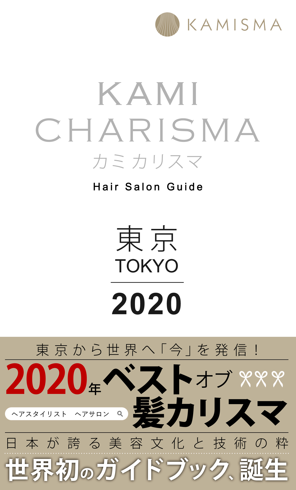

歴史
2018年
発足
日本が世界に誇るコンテンツであるアニメや和食・ 伝統芸能等に匹敵する人気となっているのが 「美容室」です。 この日本の美容室の圧倒的な本物の技術力と体験を、世界にコンテンツとして発信するプロジェクトとしてカミカリスマの活動がはじまりました。
2019年12月
世界初のヘアサロンガイド「カミカリスマ」誕生
日本が世界に誇る美容技術の高さを、日本国内だけでなく世界に発信していくことを目的としてカミカリスマが誕生しました。世界一と言われている日本の美容技術が国内外に発信されることで新たな競争が生まれ、その相乗効果によって技術力がさらに高まり、未来永劫続いてほしいという願いのもと活動を行なっています。
現在世界18ヶ国で発売中です。

2020年
KAMI CHARISMA 東京 2021 アワード
2020.12.8 開催予定